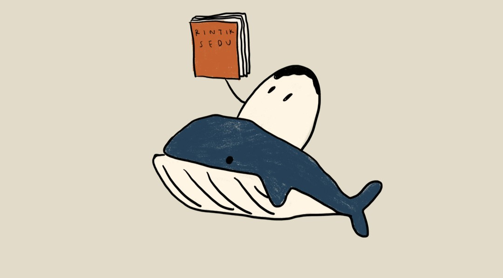

<!DOCTYPE html>
<html>
<head>
    <meta charset='utf-8'>
    <meta http-equiv='X-UA-Compatible' content='IE=edge'>
    <title>ntsana</title>
    <meta name='viewport' content='width=device-width, initial-scale=1'>
    <link rel='stylesheet' type='text/css' media='screen' href='main.css'>
    <script src='main.js'></script>
</head>
<body>
    
</body>
</html>
<html lang="en">
<head>
    <meta charset='utf-8'>
    <title>Nadhifa Allya Tsana</title>
    <meta name='viewport' content='width=device-width, initial-scale=1'>
    <link rel='stylesheet' type='text/css' media='screen' href='main.css'>
    <script src="https://kit.fontawesome.com/79fa34a98c.js" crossorigin="anonymous"></script>
</head>
<style>


img {width: 75%; height: auto; image-resolution: 100%; margin-left: 180px ;
    }

body {
background-image: url(images/background2.webp);
background-color: rgb(240, 231, 237);
background-repeat: no-repeat;
background-size: cover;}

h1 {font-family: 'courir new';
text-align: center;
font-size: 30px;
text-shadow: 2px 6px 8px rgb(216, 141, 49);}

h2 {font-family: "monaco", monospace;
text-align: center;
font-size: 25px;
width: 1200px;
margin: auto;
border-style: double;
border-width: 5px;
border-color:rgb(119, 119, 94)}


h3 {font-family: "monaco", monospace;
font-size: 20px;
padding: 10px;
width: 1000px;
margin: auto;
text-decoration: underline;}

p {font-family: "monaco", monospace;
font-size: 18px;
text-align: justify;
padding: 10px;
width: 900px;
margin: auto;}

div {font-family: "monaco", monospace;
    font-size: 18px;
    text-align: justify;
    padding: 10px;
    width: 1200px;
    margin: auto;
    background-color: rgb(218, 228, 190);
    width: 1100px;
    border: 8px solid rgb(235, 177, 107);
    padding: 40px;
    margin: auto;}

ol {font-family: "monaco", monospace;
    font-size: 18px;
    text-align: justify;}

ul {font-family: "monaco", monospace;
    font-size: 18px;
    text-align: justify;
    width: 900px;
    margin: auto;
    padding: 30px;
    list-style-type: circle;}


    #Daftar  {font-family: monospace;
        border-collapse: collapse;
        width: 1100px;
        margin:auto;
        padding: 30px;}
      
    #Daftar td, #Daftar th {
        border: 3px solid #161616;
        padding: 8px; 
        font-size: 18px;}
      
#Daftar tr:nth-child(even){background-color: #cfdfc4;}
      
#Daftar tr:nth-child(odd) {background-color: #d0d6aa;}
      
#Daftar th {
        padding-top: 12px;
        padding-bottom: 12px;
        text-align: left;
        background-color: #bfc99e;
        color: rgb(6, 5, 5);
    text-align: center;}

    p {outline-color:rgb(151, 151, 134);}
            p.outset {outline-style: outset;}

    a:link, a:visited {
        background-color: rgb(225, 214, 207);
        color: black;
        border: rgb(127, 133, 74);
        padding: 10px 20px;
        text-align: center;
        text-decoration: none;
        display: inline-block;
      }
      a:hover, a:active {
        background-color: rgb(118, 83, 29);
        color: white;}
    
    a {font-family: monospace;
        font-size: 20px;
        padding: 10px;
        width: 180px;
        margin-left: 220px;}

</style>
<body>
    <br>
    <h1>Sosok dibalik Rintik Sedu; Apakah Paus beneran?</h1>
    <br>
    
    <br>
    <br>

    <h2>Meninjau Novel "Kata" Karya Rintik Sedu</h2>
    <br>
    <br>
    <div>“Kata” merupakan salah satu buku karya Rintik Sedu yang diterbitkan pada tahun 2018. Di balik
        sosok nama Rintik Sedu tersebut, nama penulisnya yaitu Nadhifa Allya Tsana atau yang biasa
        disebut Paus oleh para Teri (Sebutan untuk  para penggemarnya). Tak hanya buku, Nadhifa Allya
        Tsana juga membuat podcast yang tersedia di akun YouTube @rintiksedu5939 dan Spotify Rintiksedu.
        Instagram Rintik Sedu yang kerap menulis quotes dianggap sangat relate dengan perasaan orang-orang,
        sehingga mendapatkan banyak perhatian dan para Teri selalu setia menunggu karya-karya selanjutnya dari Rintik Sedu.<br><br>
        Pada awal terbit, buku “Kata” tampil indah dengan sampul berlatar senja dan dilengkapi sepasang 
        orang silluet yang tampak sedang menikmati senja. Sampul buku “Kata” yang terlihat aesthetic tersebut 
        banyak mencuri perhatian para Teri. Hal itu merupakan salah satu ketertarikan para teri dan orang lain 
        yang pada akhirnya tertarik dan banyak membeli buku tersebut. Seiring berjalannya waktu, sampul 
        buku “Kata” diubah menjadi lebih elegan karena disertai dengan banyak warna yang indah.</div>
    <br>


    <br>

    <h2>PROFIL PAUS</h2>
    <br>
    <d1>
        <dt>
        
    <h3 style="text-align: center;">Nama Lengkap</h3>
    <p style="text-align: center;">Nadhifa Allya Tsana</p>

    <h3 style="text-align: center;">Tanggal Lahir</h3>
    <p style="text-align: center;">4 Mei 1998</p>

    <h3 style="text-align: center;">Akun Instagram</h3>
    <p style="text-align: center;">@ntsana</p>

    <h3 style="text-align: center;">Akun Youtube</h3>
    <p style="text-align: center;">@rintiksedu5939</p>

    <h3 style="text-align: center;">Akun Spotify</h3>
    <p style="text-align: center;">Rintiksedu</p>
    <br>

    <h2>PERJALANAN KARIR NADHIFA ALLYA TSANA</h2>
    <br>
    <p>Kesukaan menulis tsana berawal dari jaman sekolahnya, ia selalu mengirimkan ceritanya untuk mading 
        setiap hari Jumat, meski anak mading tidak pernah memajangnya. Pada akhirnya Tsana meminta kembali 
        karyanya dan memutuskan untuk menulis di blog saja. Tsana telah mempublikasikan ceritanya tersebut 
        dan tidak menyimpannya sendiri, ada 7 buku yang telah berhasil ditulisnya. Menurutnya, dari beberapa 
        tulisan yang telah terbit, yang menarik adalah ‘Buku Minta Dibanting', buku tersebut seperti candaan 
        baginya. Karena bukunya dipersembahkan untuk orang yang kesulitan 
        dalam mengungkapkan perasaanya. Di tengah kesibukan kuliah dan berbagai kegiatan, Tsana melawan rasa 
        malasnya untuk terus menulis dan  berkarya. Selain menulis Tsana yang seorang mahasiswa Politeknik 
        Kesehatan Jakarta Jurusan Teknik Elektromedik ini tengah sibuk menyelesaikan tugas akhir kuliahnya.<br><br>
        Dia juga sedang mempersiapkan produksi film yang diangkat dari novel pertamanya. Namun, 
        menulis tidak dapat lepas dari kehidupannya, bahkan ia sering mencuri waktu menulis ketika tengah berada 
        di angkutan umum ataupun ketika beraktivitas sehari-hari. Nama Rintik Sedu awalnya dibuat bukan terpikir 
        sebagai nama pena atau samaran. Tapi itu adalah caranya untuk menyembunyikan identitasnya agar teman-temannya tidak mengetahui
        yang menulis buku tersebut adalah Tsana. Rintik itu bermakna lebih ringan daripada hujan. Orang yang 
        terkena rintik akan lebih mudah kering dibanding orang terkena hujan. Lalu ia menggabungkan dengan sedu yang 
        memiliki makna isakan orang menangis atau segala sesuatu yang sedih. Jadi ketika seseorang membaca karyanya 
        seperti rintik, yang mudah kering dan cepat berlalu, begitulah filosofinya. Baginya yang terpenting ialah 
        dirinya telah mempublikasikan cerita tersebut dan tidak menyimpannya sendiri. Hingga muncul satu komentar 
        di laman blognya, menyarankan dirinya untuk menulis di platform Wattpad yang tengah hype kala itu. Akhirnya 
        ia mencoba menulis cerita ‘Geez dan Ann.’ Dan mendapatkan respon positif ketika cerita tersebut dipublikasi. 
        Hal yang ditulisnya hanya persoalan lingkungan sekitar yang tak jauh dari hidupnya. Dirinya juga menyesuaikan 
        masalah yang kerap kali dialami oleh para pembacanya. Dalam membuat tulisan, kebanyakan dirinya lakukan ketika 
        berada di transportasi umum. Bahkan kerap kali sumber ide muncul selama di perjalanan.<br><br>
        Selain menjadi penulis, tsana sangat senang berbisnis. Beberapa bisnis lainnya yang sedang ia jalani yaitu :

            <ul class="Landarchief">
                <li>Lily By Tsana (Lip Product)</li>
                <li>Romantsa (Fashion)</li>
            </ul>
        </p>
    <br>
    <p>Daftar buku karya Rintik Sedu:</p>
    <br>
    <h2>BUKU KARYA RINTIK SEDU</h2>
    <br>
    <table id="Daftar">
        <tr>
            <th>Judul Buku</th>
            <th>Tahun Terbit</th>
            <th>Halaman Buku</th>
        </tr>
        <tr>
            <td>Geez dan Ann</td>
            <td>2017</td>
            <td>261</td>
        </tr>
        <tr>
            <td>Kata</td>
            <td>2018</td>
            <td>406</td>
        </tr>
        <tr>
            <td>Rahasia Geez: Free Chapter</td>
            <td>2018</td>
            <td>26</td>
        </tr>
        <tr>
            <td>Kata: Free Chapter</td>
            <td>2018</td>
            <td>49</td>
        </tr>
        <tr>
            <td>Masih Ingatkah Kau Jalan Pulang</td>
            <td>2020</td>
            <td>108</td>
        </tr>
        <tr>
            <td>Buku Minta Dibanting</td>
            <td>2020</td>
            <td>64</td>
        </tr>
        <tr>
            <td>Buku Minta Disayang</td>
            <td>2021</td>
            <td>64</td>
        </tr>
        <tr>
            <td>Pukul Setengah Lima</td>
            <td>2023</td>
            <td>208</td>
        </tr>
    </table>
    <br>
    <br>
    <h2>Quotes Rintik Sedu</h2>
    <br>
    <br>
    <p class="outset">– Sedalam apapun rasa sayang, yang namanya hati enggak akan pernah cuman untuk satu orang.</p>
    <p class="outset">– Dia adalah ketidakmungkinan yang tidak bisa kulepaskan.</p>
    <p class="outset">– Lucunya justru circle terdekat yang membuat kita gak percaya sama mimpi sendiri.</p>
    <p class="outset">– Semua hal butuh proses, kita gak bisa langsung dapat yang terbaik.</p>
    <p class="outset">– Nanti juga sembuh sendiri.</p>
    <p class="outset">– Kamu mencintaiku, tapi tak sungguh-sungguh. Seperti perjalanan jauh yang siap gugur ditengah jalan.</p>
    <p class="outset">– Kau melanjutkan perjalanan mu, aku belum.</p>
    <p class="outset">– Tau gak kenapa semesta sering buat kita kecewa sama perlakuan banyak orang? supaya kita kapok buat tergantung sama orang lain.</p>
    <p class="outset">– Dia iseng dan aku tetep tanggepin.</p>
    <p class="outset">– Pada akhirnya kita mengerti, bahwa tidak ada proses melupakan yang benar-benar berhasil.</p>
    <br>
    <br>
    <h2>CONTACT ME</h2>
    <br>
    <br>
    
        <p><b>Jl. Gg. H. Gharif</b></p>
        <p><i class="fa-solid fa-map-location-dot"></i> Anastasya Meliyanti (11210251000018)</p>
        <p><i class="fa-solid fa-tty"></i> +628-5892-012-225</p>
        <p><i class="fa-regular fa-envelope"></i> lipsaremov@gmail.com</p>
    <a href="https://rintiksedu.com/" target="_blank">Website Rintik Sedu</a>
</div>

</body>
</html>
    
</body>
</html>
